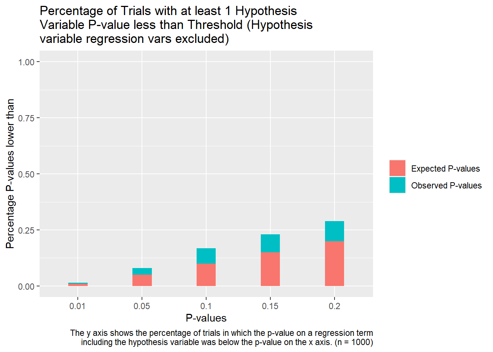
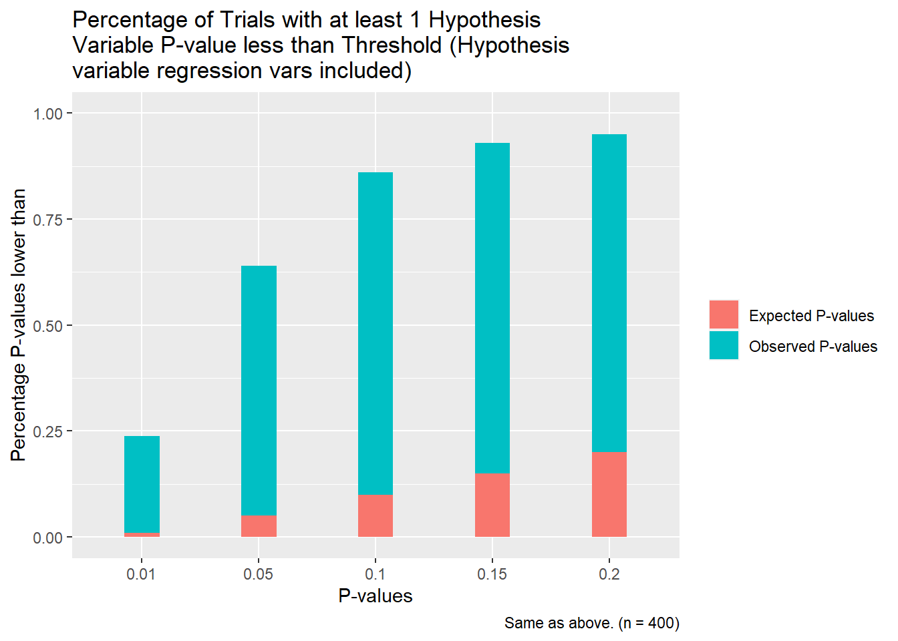

3 Practically Speaking
3.1 Simulations
I would love to run simulations with a lot of samples and variables and so forth, but my laptops bones are old and weary, and thus won’t allow me to. So, I’ve settle for something a bit more modest. The idea behind the simulations is simple: I generate random normal variables equal to the number of IVs plus one (corresponding to the DV). The first IV is the one whose coefficient we’d like to test if we can make it significant and will be called the ‘hypothesis variable.’ All the other are ‘control variables.’ The mean and standard deviation of each variable are controlled using hyperparameters and are thus standard normal. I run simulations using relatively conservative constraints. For the first experiment, I take all control variables, all interactions between, and all power of 2, and then run a regression over all subsets of fixed sizes that don’t include any of the basis function transformations of the hypothesis variables (in this case, all subsets of four linear terms, two interaction terms, and three polynomial terms). I then repeat this over a large number of samples and report the measured quantiles for the best case p-values on the hypothesis variable.

To interpret the graph above: the red is what one would expect if the confidence interval estimates were actually proper (ie we would expect to see a p-value less than .2 twenty percent of the time and so forth). The blue values is what we actually observe. Just looking at it roughly, it seems the p-values which are calculated the normal way are around 30% more confident than they really ought to be. This is a pretty big disparity; that said, the fact that the disparity is substantially lower at the low p-values is somewhat heartening. This simualtion is only a very small fraction of the broad expanse of models we could reasonably expect a researcher in this situation to estimate though. So, let’s broaden things up a bit. The next simulation is the same as the last except that transformations of the hypothesis variable are allowed and we report a positive result if any of these transformations yields a positive p-value. The results are as follows:
 This is much much worse. For almost all samples (which should be completely independent) we can find a transformation that gives the hypothesis variable a p-value of .2 or above. For about a quarter of samples we can find one that is significant at the 1% level. Clearly the conventional p-values are way off here. And we this is still a severely restricted set of transformations that we’re working with. Not good.
3.2 What does it all mean?
It is worth noting that the problem of it being too easy to fit models to data is in no way exclusive to academic fields that gravitate towards regression analysis or even fields where statistics are all that prominent. Particle physics has a similar sort of problem. After the failure of the LHC to find supersymmetric particles, a common accusation lobbed against string theorists is that whenever there is an adverse experimental finding against their theory they always adjust the theory by adding a new particle or whatever so that it against conforms with experimental results without grappling with the failure to make accurate predictions in the first place. The string theorists generally respond that every theoretical framework has falsifiable versions of it and that the underlying unification of gravity and quantum mechanics is quite valuable1. One can come down on either side of this debate but the point is that these sorts of issues aren’t restricted to the softer sciences.
The larger point is that there are very difficult systemic issues in how we do research that make it hard to get reliable results. I’ve talked a lot about p-hacking vs honest inquiry in the previous sections and that’s an important framing device for why we care that confidence intervals are probably too wide. That said, I think these issues would still persist even if we were totally confident that all researcher were totally honest and none were p-hacking. Researchers are simply given too much flexibility to create models. If we frame the problem like this, the only solution is to restrict the flexibility researchers have. Broadly, I think I’m in favor of this; however, there are good and bad ways to accomplish that goal. I’ve already alluded to pre-registration being a good paradigm to use. In a purely Platonic sense, the restrictions to researchers there are rather severe in the sense that researchers can’t deviate much from the plan2. The key side benefit of this is that it forces them to think more carefully about the theoretical underpinnings of the types of models they’re building and why they are making the assumptions they do. This is a really really good thing as in-depth model analysis is something that just doesn’t really happen in the empirical literature in fields like economics. Another good path would be to encourage researchers to make it easy to replicate their work. As it stands, in many papers the control variable matrices often aren’t even fully specified as to what variables they contain. It’s hard to check if these controls are reasonable as very few authors give the data and scripts necessary to replicate their work. Such access could serve as a sort of check on bad research that abuses the data. Of course, what this really boils down to is just the idea that people should be better at research. People should use better methods, should build better models, etc. And in some respect that seems like wildly wishful thinking in a sense that I agree with. The problem is that the world we live in is one where there’s a lot of bad research and fewer institutions to correct that than there should be. So, if the world can’t be perfect, at least we can try some things that might make it a little better.
Entertainingly, physics also has a statistical problem where they set confidence intervals for their measurements of fundamental constants and pretty regularly get updated estimates that are outside those intervals from more precise experiments, but that’s neither here nor there.↩︎
Or they can’t deviate much in the platonic ideal case of pre-registration. Practical implementations often have researchers giving much less information than might be desired.↩︎